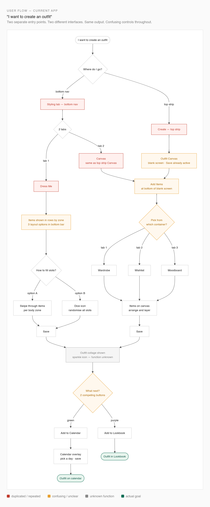
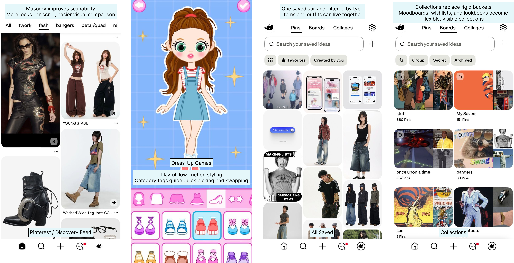

01 / Redesign intro
Starting Point
Whering has a product idea that feels immediately lovable: take the messiness of a real wardrobe and turn it into something visual, playful, and useful. It sits in a rare space between utility and feeling. It is part wardrobe tracker, part outfit playground, part sustainability nudge.
The focus is on making the strongest parts of the product easier to reach: discovery, styling, saving, planning, and learning from what you actually wear.
02 / Redesign Showcase
Screens in Motion
Whering is at its best when the wardrobe feels alive: items becoming outfits, outfits becoming plans, and saved pieces turning into a clearer sense of personal style.
03 / Where Whering works best
Why Whering Works
Whering works because it gives a familiar feeling a product shape. Most people know the frustration of looking at a full wardrobe and still feeling like there is nothing to wear. Whering turns that moment into a system: upload what you own, create looks, plan them, and slowly understand your wardrobe better.
The product is also emotionally smart. It makes sustainability feel less like a lecture and more like a creative act. Rewearing becomes styling. Tracking becomes self-knowledge. Planning becomes a small way to reduce daily stress.
That is the part worth protecting. The redesign should not flatten the product into a cold utility. It should make the playful, visual, almost dress-up quality easier to access without making users fight through the structure underneath.
04 / Screen observations
Screen-Level Observations
This carousel looks at screens where the product is visually strong, while also showing moments where the structure asks for extra interpretation from the user.
05 / Broken flows and disconnected loops
Where the Flows Start to Break
The main structural issue is not one screen. It is the way many parts of the app ask users to move through duplicated steps, repeated icons, and redundant decisions all at once.
Instead of one clear path, the user sees multiple surfaces that partially overlap: Canvas and Dress Me, Plan and Planner, Wardrobe and Wishlist and Moodboard and Lookbook. Each one makes sense locally, but together they create product debt.
To show this clearly, I am focusing on two user journeys:
- I want to create an outfit.
- I want to plan an outfit for a specific day.

06 / Design inspiration
Pinterest, Childhood Dress-Up Games, and Cosmos
The redesign direction comes from references that make visual browsing, styling, and collecting feel simple without over-explaining the system.

Pinterest masonry grid
For higher discovery density. A masonry feed lets users scan many looks at once, so something can catch the eye faster than a one-outfit-per-screen model.
Childhood Dress-Up Games
For a playful creation model. Categories act like visual tags, and clothes sit directly underneath, making selection feel immediate and easy.
All Saved
For one saved surface with simple filters. Items and outfits can live together, then be separated through tags rather than separate top-level buckets.
Collections
For moodboards, wishlists, and lookbooks as user-made collections. Visibility settings can decide what enters other people's discovery feeds.
07 / Concept consolidation
Reducing Mental Load and Product Debt
The redesign consolidates overlapping concepts so users can build a simpler mental model of the app. The goal is not to remove richness. The goal is to reduce the number of decisions the user has to make before getting value.

Canvas + Dress Me -> Style
One creation workflow for composing outfits from items.
Wardrobe + Wishlist + Moodboard + Lookbook -> Collections
One flexible grouping model that still allows different user intentions.
Created + Discovered + Photo -> Outfit
One outfit object model with consistent actions and source stored as metadata.
08 / Navigation
The Navigation I Would Move Toward
The proposed navigation separates passive discovery, active search, creation, planning, and personal ownership. It gives each major user intent one clear home.
09 / Connected loops
How the New Loops Reinforce Each Other
Once the concepts are consolidated, the app can behave less like a set of separate features and more like a connected wardrobe system.
The more a user discovers, styles, saves, and plans, the more useful the product becomes. This is the compounding loop: wardrobe data improves recommendations, saved outfits reduce future decision effort, and planning turns the app from a catalogue into a daily utility.
10 / About me
About Me
I'm Sreenidhi, a product designer based in India. My interest in design comes from two directions: understanding people and understanding systems. I'm drawn to how people think, choose, and build habits around products, and how technology can make those experiences simpler and more useful.
That naturally led me to consumer products, especially products people return to often and build into everyday life. My work focuses on interaction design, product clarity, and the details that make experiences feel intuitive.
I like working across both thinking and making: research, user conversations, testing ideas, rapid prototyping, and newer AI workflows that help move from concept to execution faster. Much of my recent work has been in fashion-tech, exploring virtual try-on, fashion apps, and the product workflows around AI-generated SKU imagery.
This project reflects the kind of problems I enjoy most: useful products, thoughtful interactions, and complex systems made simple.
Closing Notes
Whering already has the hard part: a product people can emotionally understand. The redesign is about making that emotional value easier to experience through clearer flows, fewer duplicated decisions, and a stronger relationship between discovery, styling, planning, and wardrobe insight.
Final direction: keep the charm, reduce the debt, and make the product loop feel as effortless as the idea behind it.